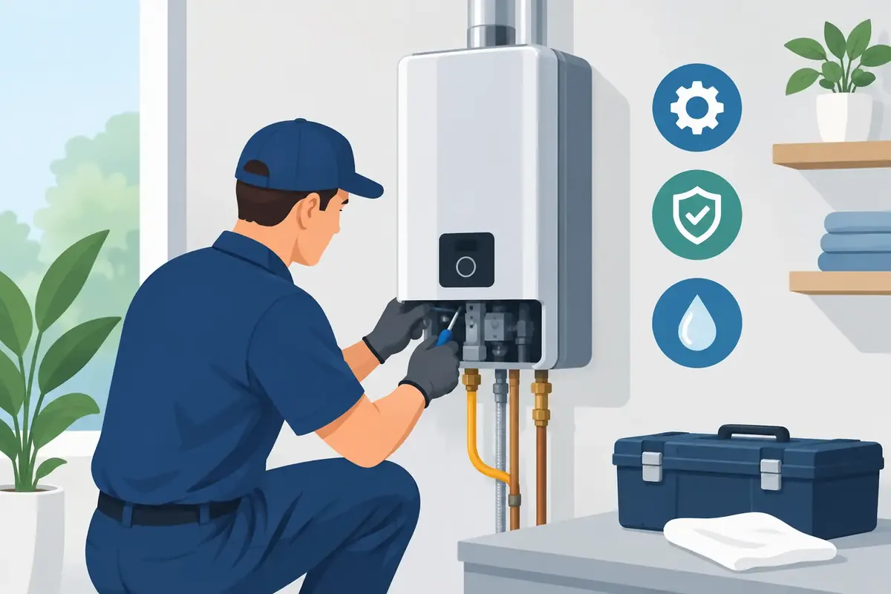

A tankless water heater is easy to forget when it is doing its job well. Hot water arrives on demand, the unit takes up little space, and there is no large tank quietly holding dozens of gallons in a closet or garage. But tankless heater maintenance is what keeps that convenience from turning into a cold shower, an error code, or an unexpected repair call.
For homeowners and property managers in Middle Tennessee, water quality is often the deciding factor. Minerals in the water can build up inside a tankless heater's heat exchanger, making the unit work harder to produce the same hot water. Regular professional care protects efficiency, comfort, and the long-term value of your equipment.
Why tankless heater maintenance matters
Tankless systems heat water as it passes through the unit. That design can be highly efficient, but it also means the internal components are exposed to every mineral and sediment particle in the incoming water supply. Over time, scale can coat the heat exchanger and restrict water flow.
When buildup is left alone, you may notice that hot water takes longer to arrive, the temperature changes unexpectedly, or the unit struggles when more than one fixture is running. A heater may also become noisier, display a service code, or shut down to protect itself. Those warning signs do not always mean the system has failed, but they should not be ignored.
Maintenance is less about fixing a broken heater and more about preventing one. A properly serviced tankless unit can operate more efficiently, avoid unnecessary strain, and deliver the reliable hot water your family, tenants, guests, or employees expect.
What a professional service visit should include
A tankless heater needs more than a quick look at the outside cabinet. The right maintenance appointment addresses the components that affect safety, combustion, water flow, and heat transfer.
Flushing the heat exchanger
Flushing, sometimes called descaling, is the core of tankless heater maintenance. A technician circulates an approved cleaning solution through the heat exchanger to remove mineral scale. This helps restore water flow and allows the unit to transfer heat as designed.
How often this is needed depends on your water hardness, household water use, and the manufacturer's requirements. Many systems benefit from annual flushing, especially in homes without water treatment. A household with a water softener or descaling system may have different needs, but the heater should still be inspected regularly.
Cleaning filters and checking water flow
Most tankless units have an inlet water filter that catches debris before it reaches sensitive internal parts. A clogged filter can reduce flow and contribute to performance problems. During service, the filter should be cleaned and the technician should check for signs of sediment, restricted flow, or leaking isolation valves.
This is also a good time to inspect the pressure relief valve and condensate drain on condensing models. A blocked or improperly routed condensate line can create problems that are easy to miss until water appears where it should not.
Inspecting venting, gas, and electrical connections
Gas-fired tankless heaters rely on correct combustion and venting. The intake and exhaust terminations must be clear, secure, and properly installed. Birds' nests, leaves, insect activity, loose connections, or vent damage can affect safe operation.
A qualified plumber should also inspect gas connections, look for signs of leakage or corrosion, and confirm that the unit is receiving proper fuel supply. For electric tankless heaters, the focus shifts to electrical connections, breakers, wiring condition, and the unit's ability to meet demand safely.
Signs your tankless water heater needs attention
A tankless unit does not always fail without warning. Paying attention to small changes can help you schedule service before hot water stops at the worst possible time.
Call for an inspection if your system begins producing inconsistent temperatures, makes unusual clicking, popping, or rumbling sounds, or displays an error code. Reduced water pressure at hot fixtures, a sulfur-like odor, moisture around the unit, or discolored water also deserve prompt attention. If you smell gas, leave the area, avoid switches and open flames, and contact the gas utility or emergency services as appropriate before arranging plumbing service.
For a commercial property, the stakes can be higher. Restaurants, offices, salons, rental properties, and other facilities may depend on steady hot water for daily operations. A maintenance plan can help reduce surprise downtime and make it easier to budget for needed repairs or equipment replacement.
What homeowners can do between service visits
There are a few simple checks that can support your heater between professional appointments. Keep the area around the unit clear so air can circulate and a technician can access it safely. If the heater is installed outdoors, periodically look for visible debris around the vent openings and make sure landscaping has not grown into the unit.
Check occasionally for water around the heater, pipes, or valves. Even a small drip can lead to corrosion or indicate that a connection needs attention. It is also wise to pay attention to changes in your water quality. If you see more white residue on faucets, shower doors, dishes, or appliances, mineral buildup may be increasing throughout the home, including inside the tankless heater.
Avoid taking apart the unit or attempting a flush without the correct equipment, cleaning solution, and manufacturer guidance. Tankless systems contain electrical components, gas connections, high-temperature water pathways, and safety controls. A do-it-yourself approach can create leaks, damage a heat exchanger, void a warranty, or miss a condition that an experienced technician would catch.
Water treatment can reduce maintenance demands
If hard water is a recurring issue in your home, it is worth looking beyond the heater itself. A water softener, whole-house filtration system, or water descaling system may reduce the mineral load reaching plumbing fixtures and water-using appliances.
The best solution depends on the results of your water conditions and your household's priorities. Water softeners are effective for hardness minerals, while filtration systems can address other concerns such as sediment, chlorine, or certain contaminants. Not every home needs the same equipment, and no treatment system eliminates the need for tankless water heater inspections. Still, treating the cause of heavy scaling can help protect the heater, faucets, shower valves, dishwasher, and washing machine.
When repair makes more sense than replacement
An error code or performance issue does not automatically mean you need a new tankless heater. In many cases, flushing the system, cleaning a filter, replacing a worn sensor, correcting venting, or repairing a valve can restore dependable operation.
Replacement may be the better choice when the heat exchanger has failed, repairs are becoming frequent, parts are no longer available, or the existing unit was undersized from the start. Sizing matters because a tankless heater must meet the required temperature rise and simultaneous demand. A system that works well for one bathroom may not keep up with multiple showers, laundry, and kitchen use at the same time.
A qualified assessment should explain what is wrong, what the repair involves, and whether replacement offers a better long-term value. Clear, upfront pricing gives property owners room to make a confident decision instead of feeling pressured during a hot-water emergency.
Make maintenance part of your home plan
The best time to schedule tankless service is before the heater starts sending warnings. Annual maintenance is a practical starting point for many Middle Tennessee homes, particularly where hard water is present or where the heater serves a large family. Property owners with lower water use or effective water treatment may have different intervals based on the manufacturer's recommendations and the unit's condition.
Angle Stop Plumbing brings experienced, respectful service to homes and businesses that need dependable hot water without the hassle. A trained technician can inspect the system, flush the heat exchanger when needed, identify developing concerns, and help you understand whether water treatment could protect your plumbing investment.
A well-maintained tankless heater should stay out of your thoughts most days. That quiet reliability is exactly the goal: hot water when your family needs it, fewer surprises, and greater peace of mind at home or at work.